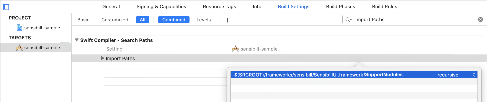

Troubleshooting Reference
Troubleshooting Reference
Troubleshooting
Compilation Errors
“Building for …, but the linked and embedded framework ‘SensibillUI.framework’ was built for iOS + iOS Simulator.” on Xcode 12.3
When running on a simulator using Xcode 12.3, the following error appears during compilation:
Building for the iOS Simulator, but the linked and embedded framework ‘SensibillUI.framework’ was built for iOS + iOS Simulator.
Or, when running on a device using Xcode 12.3, the following error appears during compilation:
Building for iOS, but the linked and embedded framework ‘SensibillUI.framework’ was built for iOS + iOS Simulator.
Solution:
Update target’s Build Settings Validate Workspace settings to Yes.
“Could not load underlying module” while migrating from 1.25.0 to 1.25.1.
Compilation error
Could not load underlying module
appears when importing the SDK using import SensibillUI.
Solution:
Please follow the How to use SensibillUI module in Swift instructions specified in the Direct Download section of the Installation Guide.
“No such module ‘SensibillUI’” in Swift Files
When you are embedding Sensibill SDK manually, and are upgrading to Sensibill SDK v. 1.25.0 or higher, the above compilation error may appear next to the
import SensibillUI
statement in a Swift file.
Solution:
Add the path to the Sensibill framework to your target’s Import Paths setting under the Swift Compiler - Search Paths section in your target’s Build Settings. Specify the recursive option.

“Module ‘SensibillUI’ not found” in Objective-C Files
After upgrading to the Sensibill SDK v1.25.0 or higher, the above compilation error may appear next to the
@import SensibillUI;
statement in Objective-C file .
Solution:
Usage of this syntax is unavailable in Sensibill SDK 1.25.0 or higher. Please convert the import statement to the following syntax:
#import <SensibillUI/SensibillUI.h>
#import <SensibillUI/SensibillUI-Swift.h>
“Unknown type name SBL...” in Objective-C File
After upgrading to the Sensibill SDK v. 1.25.0 or higher, the above compilation error may appear in the Objective-C file, even though you have imported SensibillUI with the following syntax.
#import <SensibillUI/SensibillUI.h>
Solution:
In addition to the SensibillUI.h, import the SensibillUI-Swift.h header file to access the SDK’s Swift classes from an Objective-C file:
#import <SensibillUI/SensibillUI-Swift.h>
Runtime Errors
“Image not Found”
The following error may appear at runtime:
Referenced from: /…/SensibillDemo.app/Frameworks/SensibillUI.framework/SensibillUI Reason: image not found
Possible Cause: Framework was not included in Embedded Binaries
Solution: ensure that the framework is included in Embedded Binaries in addition to the default Linked Frameworks and Libraries.
Possible Cause: Objective-C only project doesn’t have a correct configuration for Swift
Solution: add a Swift Bridging header to the project:
- Open a new file dialog from the File > New > File… menu
- Select the Swift File
- When prompted to create a Bridging Header, click Yes.
“No code signature found”
The following error appears when installing your app to a physical device:
App installation failed No code signature found.
Solution:
Make sure that the Run Script Phase added during installation has the option Run script only when installing checked.
Debugging
The Sensibill SDK uses the OSLog framework for logging. All Sensibill SDK log statements use SBL-prefixed categories to be identifiable. The category will appear in front of the log message in with the format [SBL...] and can be used to filter specific messages.
The following categories are provided:
- SBLNet for error and debug messages related to networking
- SBLCapture for error and debug messages related to Sensibill Capture
- SBLError for all other SDK error messages
- SBLSDK for all other SDK debug statements
Example:
The following snippet shows the appearance of various log messages in the XCode Console.
2021-01-13 12:08:18.263416-0500 YourApp[1234:5678901] [SBLSDK] Sensibill:start
...
2021-01-13 12:08:18.263703-0500 YourApp[1234:5678901] [SBLNet] Certificates for pinning were loaded from main bundle
...
2021-01-13 12:08:18.264000-0500 YourApp[1234:5678901] [SBLError] SensibillError=1001: Error Domain=<...>
Sensibill Errors
When the SDK generates an error it returns a SensibillError type and logs the code of the returned error using the SBLError category with the format SensibillError=..., followed by additional information.
The additional information provides details about the cause and/or source of the error. It may include:
- The domain, code, and message (if available) of the error received from the underlying framework.
- The name, code, message, and
correlationIDof the error returned by the Sensibill API. The last field -correlationID- allows Sensibill support to find the matching operation in the server side logs.
Note: when viewing the log in the Console app outside of XCode, any additional information about the error that may contain sensitive data is stripped.
Example:
The following example demonstrates a situation where an error with the code 1063 is generated by the SDK. As the additional information shows, the log was generated when an error with the domain NSURLErrorDomain and code 2 was received by the SDK from the one of the underlying frameworks.
2021-01-13 12:08:18.265700-0500 YourApp[1234:5678901] [SBLError] SensibillError=1063: Error Domain=NSURLErrorDomain Code=2 "(null)"